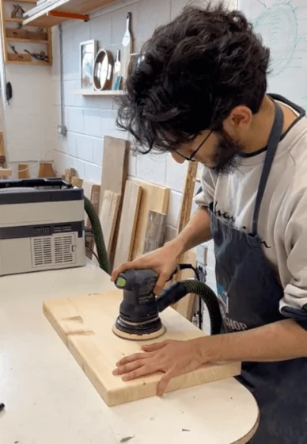
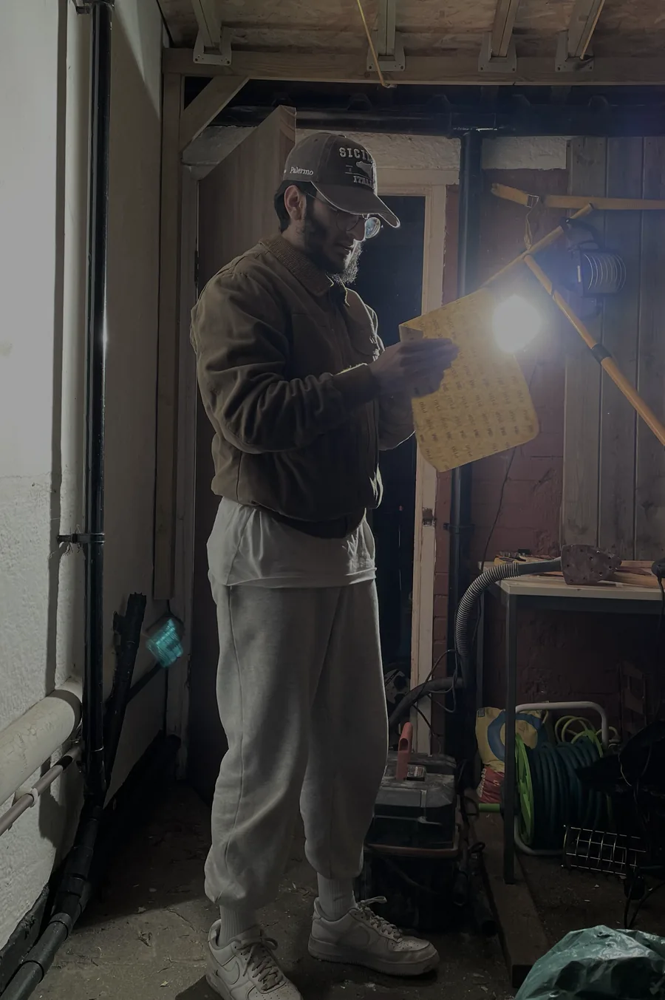

01About Me
About Me
Education
A first-class honours chemical engineering graduate from University College London, I have complemented my studies with a minor in computer science, resulting in an intriguing fusion of unique insights and skills. I attribute my knowledge base to intensive coursework, exciting programming projects, and endurance during challenging training courses.
Coding has always been my creative outlet, providing me the ability to transform ideas into functional digital artwork. Since the age of eight, when I discovered the pleasure of coding via Scratch, I have never ceased learning and exploring. As my academic journey expanded, I encompassed pure sciences and eventually chemical engineering, the latter being my primary degree. Notwithstanding, my passion for programming persisted, leading me to an additional minor in computer science.
Experience
Besides this formal academic and technical training, the exposure from my employment history contributes significantly to my broadened understanding. As a Managing Director of H&C Retailing LTD, I learned to handle real-world technical and non-technical challenges. I also accomplished my role as an SIA Licensed Door Supervisor at Centre Circle Events Management and as a part-time Barista at several coffee shops.
However, the role that truly allowed me to gain IT knowledge was my stint as a Trainee Data Engineer at Sigma Labs. I undertook various programming projects, handling complex issues, and learning to work in a team-centric environment. This foundational experience has allowed me to develop not just technically, but also refine my collaborative skills.
Tech stack
In terms of my tech stack, Python has remained my mainstay, providing me with several hundreds of hours of experience, I have recently forayed into web development through personal and volunteer projects. I have delved into HTML and CSS, and have begun my journey with JavaScript. My data engineering training gave me an industry standard level understanding of AWS, Terraform, PostgreSQL, SQL Server and many more.
To provide a clear representation of my experiences, accomplishments, and skillset, check out my resume here.
02Outside of work
Woodworking & DIY
Outside of work and education, I like to spend my time honing my skills in woodworking and DIY. Since being sent to a 4 hour woodworking crash-course by my wife, I have been captivated by the art. Learning how to use a variety of different power & hand tools to create and shape some amazing pieces or projects has been extremely fulfilling. It is a great way to spend weekends, and has recently come in handy for panelling my parents house. Who knew carpenters were seasoned mathematicians?

